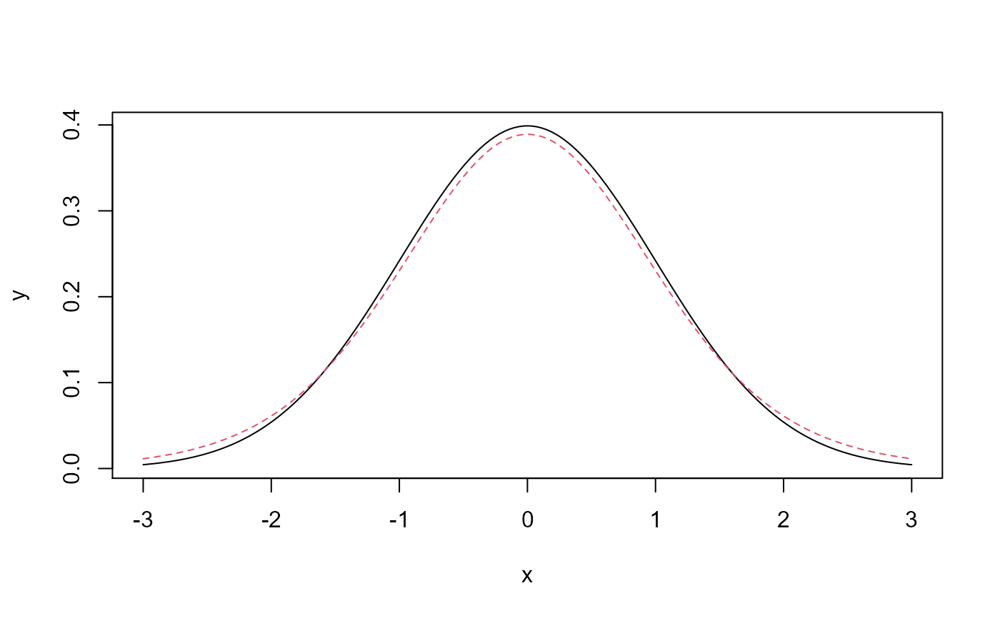

Calculates the Kullback-Leibler divergence (relative entropy) between unweighted theoretical component distributions. Divergence is calculated as: int [f(x) (log f(x) - log g(x)) dx] for distributions with densities f() and g().
kl.divergence(object, eps = 10^-4, overlap = TRUE)
| object | Matrix or dataframe object with >=2 columns |
|---|---|
| eps | Probabilities below this threshold are replaced by this threshold for numerical stability. |
| overlap | Logical, do not determine the KL divergence for those pairs where for each point at least one of the densities has a value smaller than eps. |
pairwise Kullback-Leibler divergence index (matrix)
Kullback S., and R. A. Leibler (1951) On information and sufficiency. The Annals of Mathematical Statistics 22(1):79-86
Jeffrey S. Evans <jeffrey_evans@tnc.org>
kl.divergence(y)#> n t #> n 0.000000000 0.004314432 #> t 0.005138101 0.000000000# extract value for last column kl.divergence(y[,1:2])[3:3]#> [1] 0.004314432